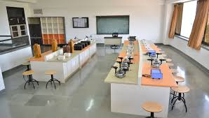
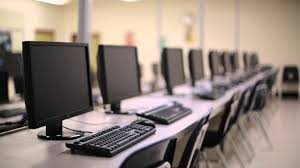
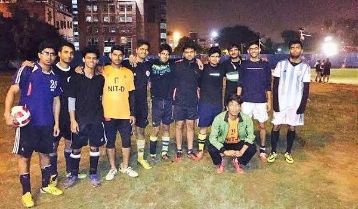

|  |  |  |
Audio Visual Lab & Technological Centre finds place at My School that has the latest systems with a very healthy student computer ratio. Modern technology is being put to the best of use in providing education. LCD projectors in audiovisual labs provide scope for interactive learning Student groups are assigned projects, and encouraged to utilize the facilities of technology centre that has access to Internet and other sources of latest information to complete the same. This instills in them the need for collective activity, coordination and teamwork. Students have the advantage of gathering additional information on any subject and the developments as they take place anywhere in the world. Internet browsing provides not only global connectivity but also a mode of interacting with students of different countries, share their views and ideas